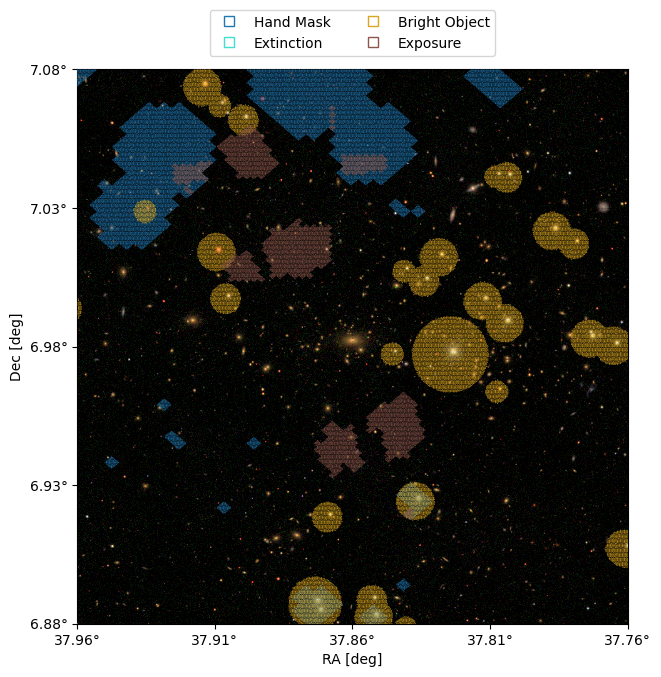

Research
Instruments, data processing, and the systematics that stand between them and cosmology.
My research sits at the interface between astronomical instrumentation, data processing and scientific analysis. Surveys such as LSST produce enormous amounts of data, but extracting reliable results requires understanding the instrument’s response, the observational systematics, and the real performance of analysis methods. I work along this whole chain, from instrumental data to production-level software and scientific analyses, with tools that can be validated quantitatively on real and simulated data.
My Ph.D. was carried out within the Rubin Observatory calibration team and the LSST Dark Energy Science Collaboration (DESC). It covers three topics.
Photometric calibration with the Collimated Beam Projector
Type Ia supernovae are a key probe for LSST cosmology, and using them as standard candles at the required precision means calibrating the telescope’s photometric response very accurately. The Collimated Beam Projector (CBP) is an in-dome instrument that projects collimated, monochromatic artificial point sources of monitored flux and wavelength directly into the aperture of the Simonyi Telescope. This bypasses the atmospheric and and mitigate stray-light systematics that limit flat-field and standard-star calibration.
Part of my thesis is devoted to the CBP at the Rubin Observatory, with the goal of characterizing the photometric response of the Rubin Telescope at the sub-permil level.
- End-to-end analysis pipelineA complete CBP data-reduction pipeline integrated in the Rubin Data Management framework: instrument signature removal, spot detection, two-dimensional background subtraction and aperture photometry on the 189-CCD focal plane.
- Detector quantum efficiencyRelative telescope response of individual LSSTCam detectors between 300 and 1100 nm, from datasets taken at several mirror positions, with sub-percent systematic differences from laboratory curves between 400 and 860 nm.
- Filter throughputThe first in-situ measurement of five of the six LSST broadband filter transmission profiles in the fully assembled telescope, and a first quantification of how the band edges shift with the angle of incidence (the blue-shift effect), by several nanometers.
- Repeatability and systematicsRepeated measurements under identical conditions agree below the per-mil level, so the CBP monitoring chain contributes negligibly to the calibration uncertainty budget. Comparing different setups also gives a direct estimate of throughput non-uniformities and background-related biases.

Survey systematics and bright-star masking
Bright foreground stars can create spurious detections and bias galaxy photometry, particularly in the dense environment of galaxy clusters. To address this, I developed automated software that generates masks around bright stars, for both LSST simulations and real data, with a method inspired by the HSC-SSP survey.
The method was validated within the WaZP cluster-finder validation, and it is used in Rubin DESC, including for early analyses of LSST Data Preview 1 such as the ongoing study of the Abell 360 galaxy cluster (paper in review).

Galaxy clusters
I contributed to the validation and optimization of the AMICO cluster finder using LSST DC2 simulations. I characterized its completeness and purity as a function of redshift and halo mass, and started studies of cluster-count forecasts based on estimates of the selection function. Together, these efforts make cluster catalogs more robust as precision cosmological probes.
Topics: Rubin Observatory and LSST, photometric calibration, Collimated Beam Projector, survey systematics, bright-star masking, galaxy clusters, LSST DESC, data-processing pipelines. Papers and talks are on the publications and CV pages.